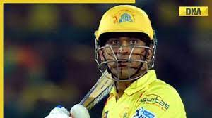

MS.DHONI
“If you don't really have a dream, you can't really push yourself; you don't really know what the target is.”
“WHAT DOESN'T KILL YOU, MAKE YOU STRONG.” ...
“It's important to learn and not repeat the same mistakes.
MS Dhoni was born on July 7, 1981, in Ranchi, Bihar (present-day Jharkhand) in a Hindu Rajput family to Pan Singh and Devki Devi. His paternal village is in the Lamgara block in Almora, Uttarakhand. His father, Pan Singh, moved from Uttarakhand to
Ranchi and worked in junior management positions in MECON. Dhoni has a sister and a brother-- Jayanti Gupta (sister) and Narendra Singh Dhoni (Brother).
Dhoni did his schooling at DAV Jawahar Vidya Mandir, Ranchi, Jharkhand and excelled in multiple sports such as badminton, football and cricket. He played as a goalkeeper
for his football team and played cricket for a local club.
Dhoni showed impressive wicket-keeping skills at the Commando Cricket Club during
1995-98 and was picked up for Vinoo Mankad Trophy Under-16 Championship for the 1997-98 session and
played well. After completing High School, Dhoni focussed on Cricket.
During 2001-2003, Dhoni was a TTE (Travelling Ticket Examiner) at Kharagpur Railway Station
, under South Eastern Railway in West Bengal.
MS Dhoni: Personal Life
Before marrying his schoolmate Sakshi Singh Rawat, MS Dhoni fell in love with Priyanka
Jha, whom he met in his early 20s. At that time in the year 2002, Dhoni was trying his best to
get selected in the Indian team.
The same year, his girlfriend died in an accident. Dhoni also dated South Indian actress,
Lakshmi Rai. Mahendra Singh Dhoni married Sakshi Singh Rawat,
his school friend from DAV Jawahar Vidya Mandir, on July 4, 2010. At the time of their marriage, Sakshi was studying a hotel management course at Taj Bengal in Kolkata as a trainee.